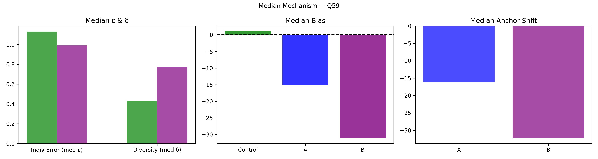

Question Q59: Happy Anniversary Twitter! What will Twitter's stock price be on the NYSE at noon on Wednesday?
Super Summary
================================================================================
QUESTION Q59: 06_Export_0720_stats_PpeLU4aCVD.csv
Happy Anniversary Twitter! What will Twitter's stock price be on the NYSE at noon on Wednesday?
Truth = 43.12
N_ctrl = 187 N_ext = 27
================================================================================
[1] COLLECTIVE ERROR (E)
Control Ec: 4002.2131 ± 10719.7547
CI = [ 0.8204 , 29634.9379 ]
Extremized Ex: 0.7665 ± 0.1916
CI = [ 0.3918 , 1.1283 ]
Difference (Ec - Ex) = 4001.4465
Percent Change = 99.98%
Bootstrap:
P(Ex < Ec) = 0.9650
→ 96.5% of samples show extremized < control
[2] INDIVIDUAL ERROR (ε)
Control mean ε = 4280.4639
Extremized ε = 1.0693
Percent Change = -99.98%
Welch t-test: t = 1.000, p = 0.3184
Cohen's d = 0.078
[3] DIVERSITY (δ)
Control SD = 58341.8410
Extremized SD = 0.9767
Percent Change = -100.00%
Levene p = 0.7048
[4] ANCHOR DIAGNOSTICS
Anchor A = 42.22
Anchor B = 44.1
A_effective = True
B_effective = True
[5] EQUATION 6 CHECK
w_L = 0.9998 w_H = 0.9999
Delta = 8562.0379
Criterion_L = True Criterion_H = True
Meets both = True
[6] δ–ε–E SCENARIO
Scenario: δ:down, ε:down, E:down
Mechanism Explanation: Calibration: anchors pull predictions inward toward the truth, reducing both individual error and diversity and improving collective accuracy.
================================================================================
FINAL INTERPRETATION (with actual figures)
================================================================================
For Q59, collective error shifted from 4002.21 to 0.77 (99.98%). Bootstrap = 96.5%. Individual error changed by -99.98%, diversity changed by -100.00%. Scenario = δ:down, ε:down, E:down. Equation 6 feasibility = True.
================================================================================
Median Mechanism Plot
